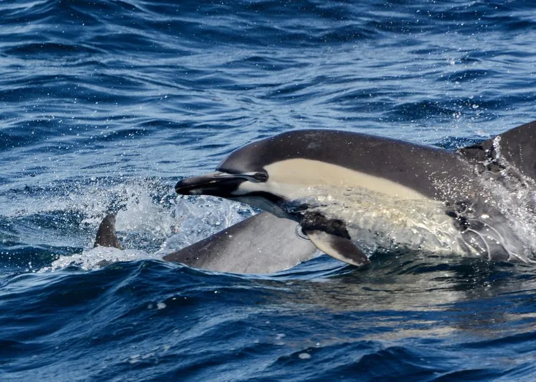

哺乳动物 · 动物界
真海豚 Delphinus delphis

全球温带和热带海域常见的小型海豚，背部和鳍肢呈黑色、身体两侧有沙漏状黄褐色斑纹，常结成大群高速跃出水面。
- 分类
- 门脊索动物门纲哺乳纲目鲸目科海豚科属海豚属
- 栖息环境
- 温带和热带海域的表层水域，包括近岸和远洋
- 地理分布
- 大西洋、太平洋、印度洋的温带与热带海域，中国东海和南海有分布
- 保护级别
- IUCN 无危（LC）；中国国家二级保护动物
物种志
真海豚体长 1.7–2.4 米，体重 70–135 kg，雄性略大。它的背部深灰至黑色，腹部白色，身体两侧有一条黄褐色或浅灰色的沙漏状斑纹，背鳍三角形、略后弯，喙细长，上下颌各有约 40–50 枚小而尖的牙齿。
真海豚广泛分布于全球温带和热带海域，包括大西洋、太平洋和印度洋，在中国东海、黄海和南海也有记录。它喜欢在表层温暖水域活动，常结成数十至数千只的大群，游泳速度快，经常跃出水面。它以小型鱼类、乌贼和虾类为食，群体协作围捕鱼群。雌性妊娠期约 10–11 个月，每胎 1 仔，寿命约 25–30 年。真海豚整体数量较多，被列为无危，但渔网误捕是主要威胁。
形态与习性
- 食性小型鱼类、乌贼与虾类
- 体长1.7–2.4 m
- 体重70–135 kg
- 寿命约 25–30 年
- 繁殖妊娠约 10–11 个月，每胎 1 仔
- 牙齿上下颌各约 40–50 枚
趣味知识
- 真海豚身体两侧有沙漏状的黄褐色斑纹。
- 它们常结成数百甚至数千只的大群活动。
- 真海豚游泳时常跃出水面，速度很快。